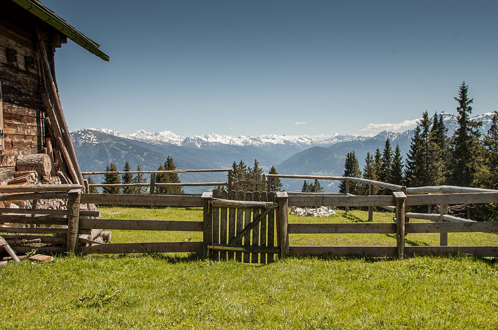

Route 2:
Die Wanderung zum Salfeinsee ist von Innsbruck aus gut erreichbar, technisch einfach, führt durch naturnahe Landschaften und zählt damit zu einer beliebten Tour der Region. Sie bietet eine abwechslungsreiche Landschaft mit herrlichen Ausblicken über das Inntal und die markanten Kalkkögel. Oben angekommen, genießen Wanderer einen beeindruckenden Rundumblick auf die umliegenden Alpen.
Streckenbeschreibung
Achselkopf
Einkehrmöglichkeiten
Rumer Alm
Anreise
Der Ausgangspunkt der Wanderung in Grinzens ist von Innsbruck aus hervorragend mit öffentlichen Verkehrsmitteln erreichbar. Mehrmals pro Stunde bringt der Bus 404 Wanderfreund*innen innerhalb 30 Minuten zur Haltestelle Grinzens Abzweigung Kemater Alm - und damit direkt zum Start der Tour.